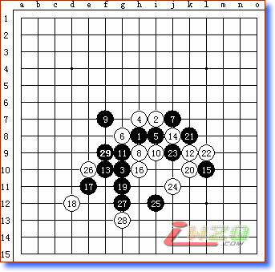

名月：禁与反禁
#1 名月：禁与反禁 作者：有志青年 发表时间：2006-6-16 7:17:06
原贴地址：http://www.pinqi.net/forum/dispbbs.asp?boardID=7&ID=282&page=1#2 Re:名月：禁与反禁 作者：天线宝宝 发表时间：2007-9-9 23:05:27
可否解释一下，为什么黑27冲四后，黑29在f9的位置就解禁了，不是很明白。#3 Re:Re:名月：禁与反禁 作者：catman 发表时间：2007-9-9 23:40:38
引用：
原文由 天线宝宝 发表于 2007-9-9 23:05:27 :
可否解释一下，为什么黑27冲四后，黑29在f9的位置就解禁了，不是很明白。
27冲四后与23 21形成了一个特形三,29F9后与3 25形成一个跳三
那这里可以看到27 23 21的特形三与9 3 25的跳三在H11形成了四四禁,
所以9 3 25不是活三,所以F9不是三三禁点
#4 Re:名月：禁与反禁 作者：天线宝宝 发表时间：2007-9-10 12:33:31
我明白了，非常感谢你，解释的很详细。#5 Re:Re:名月：禁与反禁 作者：有志青年 发表时间：2007-9-10 16:08:27

四四解三三，catman解释的很清楚了，我配个图，让后来者可以看懂吧。
#6 Re:名月：禁与反禁 作者：南井田北农夫 发表时间：2009-7-11 9:16:29

#7 Re:名月：禁与反禁 作者：阿又 发表时间：2009-11-1 16:56:39
好解，对菜菜们很有启发！！#8 Re:名月：禁与反禁 作者：最爱绿茶 发表时间：2009-11-9 11:04:54
理解了！